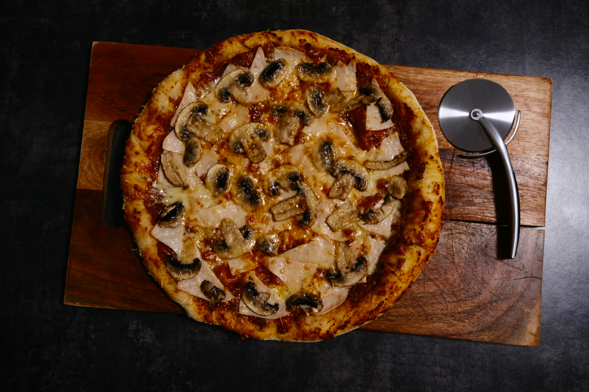

Home
Pizza Regina Recipe

Credit:Amadeus Moga
Recipe Description
A Regina pizza is a classic Italian favorite that combines a delicate balance of creamy mozzarella, earthy mushrooms, savory ham, and the sweetness of tomato sauce on a thin, crisp crust. Its appeal lies in the harmony of flavors, where the saltiness of the ham is perfectly offset by the mild richness of the cheese and the umami depth of the mushrooms. When baked at high heat, the ingredients meld beautifully, creating a pizza that’s both comforting and elegant, ideal for those who appreciate traditional Italian simplicity.
Opting for a mushroom-based variation of the Regina brings a lighter, more aromatic twist to the classic recipe. Mushrooms add a natural umami that rivals the depth of cured meats, but with a fresher, woodland character that enhances the pizza’s balance. Their subtle texture and earthy flavor make the dish feel refined yet wholesome, a perfect choice for those seeking a vegetarian option that doesn’t compromise on taste or satisfaction.
Preparation Time: 15 minutes
Ingredients
- 300g pizza dough (store-bought or homemade)
- 1/2 cup tomato sauce
- 1 1/2 cups shredded mozzarella cheese
- 1 cup sliced mushrooms
- 1/2 cup cooked ham, diced (optional)
- 1 tablespoon olive oil
- 1 teaspoon dried oregano
- Salt and pepper to taste
Directions
- Preheat your oven to 475°F (245°C). If you have a pizza stone, place it in the oven to heat up.
- Roll out the pizza dough on a floured surface to your desired thickness. Transfer it to a pizza peel or baking sheet.
- Spread the tomato sauce evenly over the dough, leaving a small border around the edges for the crust.
- Sprinkle the shredded mozzarella cheese over the sauce.
- Distribute the sliced mushrooms and diced ham evenly on top of the cheese.
- Drizzle olive oil over the toppings and sprinkle with dried oregano, salt, and pepper.
- If using a pizza stone, carefully slide the pizza onto the preheated stone. If using a baking sheet, place it directly in the oven.
- Bake for 10-12 minutes, or until the crust is golden and the cheese is bubbly and slightly browned.
- Remove from the oven and let it cool for a few minutes before slicing and serving
- Enjoy your homemade Pizza Regina!